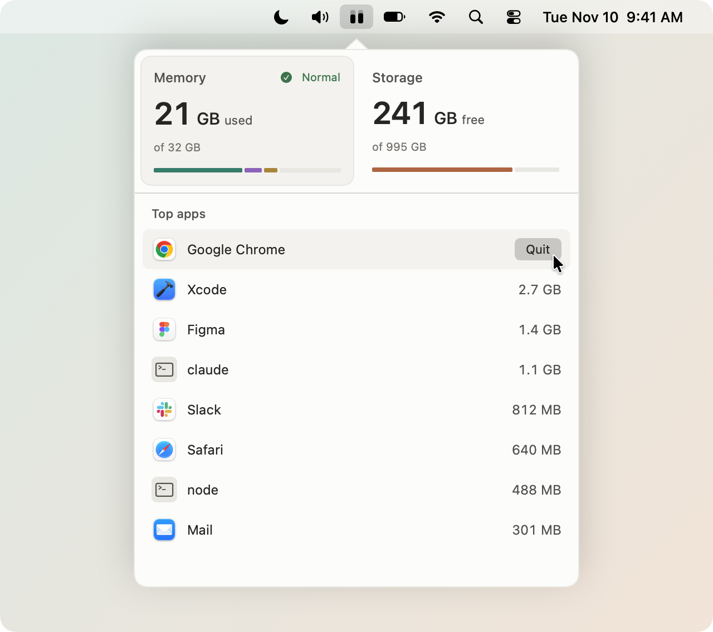

See what’s eating your memory
A small macOS menu bar app that shows how much memory, disk and CPU you’re using, and what’s taking it up.
Download
macOS 13 or later, Apple silicon and Intel. Free and open source (MIT).
Unzip it and drag gauge.app to Applications.

Memory
- Used out of total, split into apps, wired and compressed, plus the pressure level
- Your top apps by memory. Helpers count toward their app, so Safari’s tabs show up under Safari
- Command line tools like
nodeorclaudeget their own row, with the command and the folder they’re running in - Click an app to switch to it. Hover a row to quit it, or right-click it to force quit - macOS’s own processes are never offered
Storage
- Free space out of total
- The biggest apps, files and folders (500 MB and up) in Applications and your home folder, with when you last opened them
- Show in Finder or Move to Trash, and empty the Trash from there
- Full Disk Access is optional, you only need it for a complete scan
CPU & GPU
- Total CPU used across your cores, split into user and system, plus current GPU utilization
- Your top apps and command line tools by CPU, with the same click-to-switch and Quit actions
How light it is
Measured on an M5 Pro with macOS 27.2, gauge sitting in the menu bar.
- Memory and per-app numbers come straight from the kernel, no
psortoprunning in the background - The icon updates every 5 seconds (2 with CPU or GPU bars showing) and free disk space is only checked once a minute
- The window refreshes every 2 seconds, only while it’s open
- The storage scan is one low priority
durun, saved to disk so it doesn’t run again on every launch
- Memory
- 54 MB
- CPU
- 0.18% on average0.21 s of CPU time in 2 minutes
- App size
- 2.2 MB609 KB to download, Apple silicon and Intel
- Code
- 1,181 lines of Swift
- Dependencies
- None